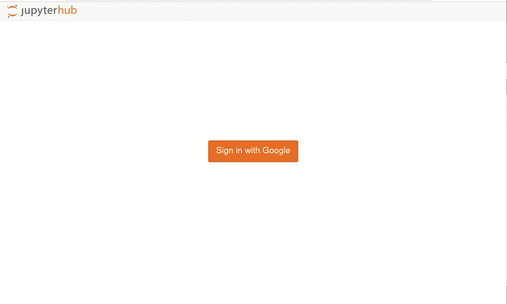

JupyterHub (self-managed)¶
Warning
This page provides a starting point for installing an application. The information is useful, but not kept up-to-date. If you struggle, contact Elastisys Consulting.
This page describes how to install a Customer Application
You are solely responsible for Customer Applications.
If you are an Elastisys Managed Services customer, please review your responsibilities in ToS 5.2.
Specifically, you are responsible for performing due diligence for the project discussed in this page. At the very least, you must:
- assess project ownership, governance and licensing;
- assess project roadmap and future suitability;
- assess project compatibility with your use-case;
- assess business continuity, i.e., what will you do if the project is abandoned;
- subscribe to security advisories related to the project;
- apply security patches and updates, as needed;
- regularly test disaster recovery.
JupyterHub brings Jupyter Notebooks to the cloud. It gives the users access to computational environments and resources without burdening users with installation and maintenance tasks. This documents shows a guide on how to setup JupyterHub in a Welkin environment.

Configure and Deploy JupyterHub¶
We chose to work with official Helm charts provided by JupyterHub. They can be downloaded via the webpage or added to your local repository by running:
helm repo add jupyterhub https://hub.jupyter.org/helm-chart/
helm repo update
Configuring JupyterHub¶
Below is a sample values.yaml file that can be used to deploy JupyterHub, please read the notes and change what is necessary. This sample uses Google OAuth for authentication and authorization.
Note
Requested resources should be evaluated and reconsidered for production. Information about resource allocation and also the enabling of GPU usage can be found here
imagePullSecrets:
- pull-secret # create this secret in the next section
hub:
revisionHistoryLimit:
config:
GoogleOAuthenticator: #(5)
client_id: $YOUR_CLIENT_ID # replace this
client_secret: $YOUR_CLIENT_SECRET # (6) replace this
oauth_callback_url: https://$PROJECT_DOMAIN/hub/oauth_callback # replace this
hosted_domain:
- example.com # replace this the email domain which are allowed to log in to JupyterHub
login_service: Google
allow_all: true
JupyterHub:
admin_access: true
authenticator_class: google
admin_users:
- email@example.com # replace this
image:
name: k8s-hub
resources: &resourceDefaults # (1)
requests:
memory: 512Mi
cpu: 10m
limits:
memory: 1Gi
cpu: 1
containerSecurityContext: &SCDefaults # (2)
capabilities:
drop: ["ALL"]
runAsNonRoot: true
seccompProfile:
type: "RuntimeDefault"
proxy:
service:
type: ClusterIP
chp:
containerSecurityContext: *SCDefaults
image:
name: configurable-http-proxy
resources: *resourceDefaults
traefik:
containerSecurityContext: *SCDefaults
image:
name: traefik
resources: *resourceDefaults
secretSync:
containerSecurityContext: *SCDefaults
image:
name: k8s-secret-sync
resources: *resourceDefaults
https:
hosts:
- $PROJECT_DOMAIN # replace this
type: letsencrypt
letsencrypt:
contactEmail: email@email.com
singleuser:
networkTools:
image:
name: k8s-network-tools
resources: *resourceDefaults
cloudMetadata:
blockWithIptables: false # (3)
storage: # (4)
type: none
image:
name: k8s-singleuser-sample
cpu:
limit: 1
guarantee: 0.1
memory:
limit: 2G
guarantee: 1G
scheduling:
userScheduler:
enabled: false
userPlaceholder:
resources: *resourceDefaults
image:
name: pause
containerSecurityContext: *SCDefaults
prePuller:
resources: *resourceDefaults
containerSecurityContext: *SCDefaults
hook:
image:
name: k8s-image-awaiter
containerSecurityContext: *SCDefaults
resources: *resourceDefaults
pause:
image:
name: pause
containerSecurityContext: *SCDefaults
ingress:
enabled: true
annotations:
cert-manager.io/cluster-issuer: letsencrypt-prod
ingressClassName: "nginx"
hosts:
- $PROJECT_DOMAIN # replace this
tls:
- hosts:
- $PROJECT_DOMAIN # replace this
secretName: jupyter-secret
- The following resources are reused using *resourceDefaults later in this file
- The following containerSecurityContext is reused using *SCDefaults later in this file
- Block set to true will append a privileged Init Container using
iptablesto block the sensitive metadata server at the provided IP. Privileged containers are not allowed in Welkin. - "type: none" disables persistent storage for the user labs. Consolidate with Platform Administrator before enabling this feature. for reference
- Use this guide to get your
client_idandclient_secretthrough the Google API Console. - This should not be treated as a secret. See risk analysis here and here.
Pushing the JupyterHub Images to Harbor¶
This sections shows how to pull the required images for JupyterHub and push them to another registry. If you are using the managed Harbor as your container registry, please follow these instructions on how to authenticate, create a new project, and how to create a robot account and using it in a pull-secret to be able to pull an image from Harbor to your cluster safely.
Note
Run the following commands in the same directory as the location of your values.yaml file, since it will automatically update it with the correct images. If not, images will need to be manually set in the values.yaml.
DOMAIN=example.com # Replace this
REGISTRY=harbor.$DOMAIN
REGISTRY_PROJECT=jupyterhub
IMAGES=$(helm show chart jupyterhub/jupyterhub | grep image: | awk '{print $3}')
for IMAGE in $IMAGES
do
docker pull $IMAGE
docker tag $IMAGE $REGISTRY/$REGISTRY_PROJECT/${IMAGE#*/}
docker push $REGISTRY/$REGISTRY_PROJECT/${IMAGE#*/}
IMAGE_NAME=${IMAGE#*/} # Remove repository information
sed -i 's|name: '"${IMAGE_NAME%:*}"'|name: '"$REGISTRY/$REGISTRY_PROJECT/${IMAGE_NAME%:*}"'|g' values.yaml
done
Deploying JupyterHub¶
To deploy simply use this command in combination with the modified values.yaml as provided above.
helm upgrade --install jupyterhub jupyterhub/jupyterhub --values values.yaml
Known Issues / Limitations¶
-
JupyterHub's custom user scheduler is disabled (which can help with efficient node downscaling). For safety reasons, developers in Welkin do not have the rights required to deploy it.
-
JupyterHub's Admin functionality is limited since some of the admin functions require container root access. Pre-installed Python packages for users can not be added through the admin interface. They can be added by modifying the Docker image, pushing it to your image registry and redeploying JupyterHub. NOTE Users can still install their own packages.
-
Persistent storage is currently disabled for Jupyter lab instances but can be enabled. It is disabled since Jupyter will allocate new storage for each user and should be carefully considered before it is enabled. This means that the workspace will be reset when the Pod crashes or is scaled down from not being used. This includes code added to the lab and installed packages.
-
GPU is not enabled currently but can be enabled depending on your infrastructure provider.